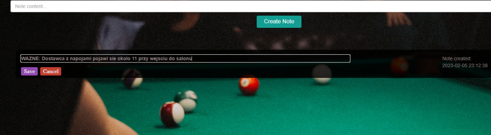

Zarządzanie notatkami
Notatki to miejsce najmniej zwiazane z rezerwacjami jednak przydatne jesli chodzi o cale prowadzenie salonu. W tym miejscu mozna przechowywac notatki dotyczace wszystkiego zwiazanego z prowadzeniem salonu. Aby dodac noatke nalezy wpisac ja w pole na gorze strony oraz kliknac przycisk ‘Create Note'
Rys. 26 | Notes - widok panelu
Dodana notatka pojawi sie ponizej razem z innymi dodanymi notatkamiRys. 27 | Tworzenie notatki
Poprawnie utworzony koszt pojawi się w oknie ‘Costs List’. W niej znajduje się lista wszystkich kosztów. Z jej poziomu można także edytować i usunąć stworzony koszt.
Rys. 28 | Lista notatek

Rys. 29 | Edycja notatki